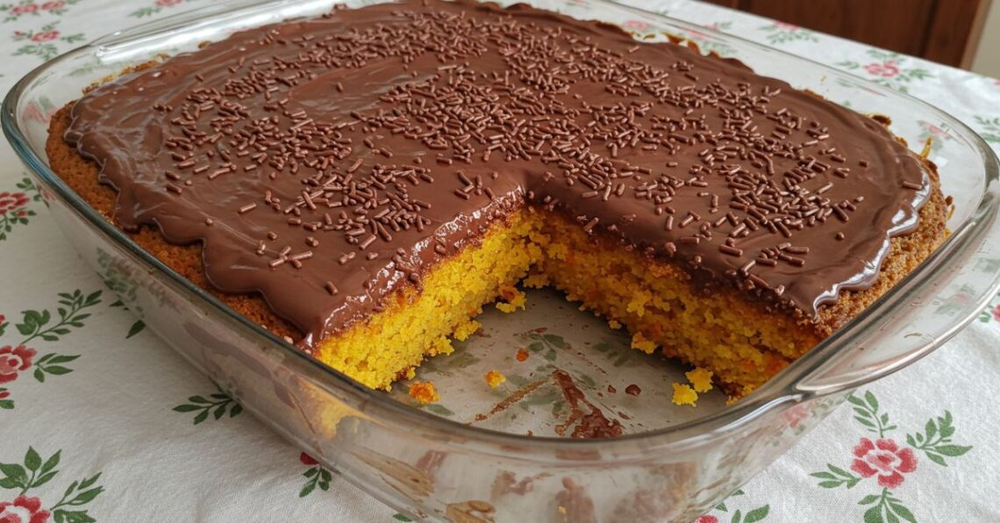
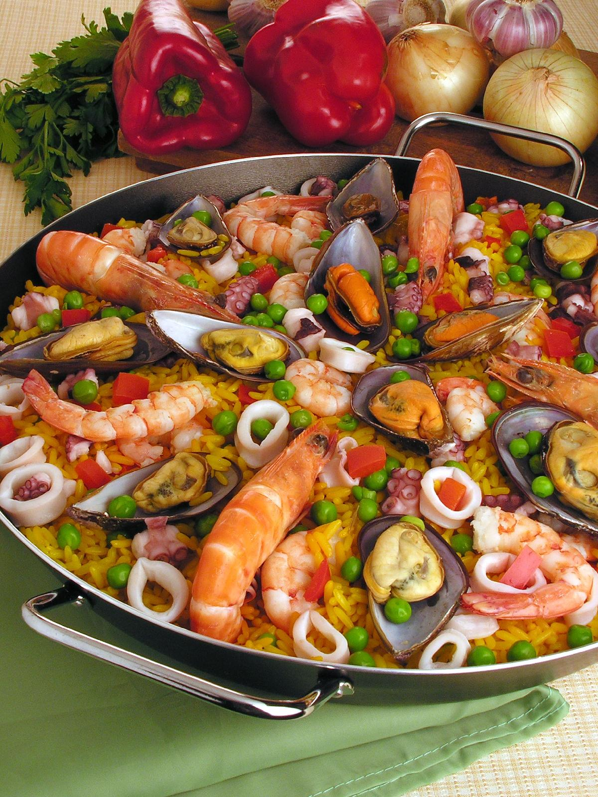

Bolo de cenoura
- 3 cenouras médias
- 3 ovos
- 1 xícara de óleo
- 2 xícaras de farinha de trigo
- 2 xícaras de açúcar
Fácil

Frango com quiabo
- 1 kg de sobrecoxa de frango
- 300 g de quiabo
- 1 cebola
- 3 dentes de alho
- Cheiro-verde
Médio

Paella
- 2 xícaras de arroz arbóreo
- 300 g de camarão
- 200 g de lula
- 1 pimentão vermelho
- Açafrão e caldo de peixe
Difícil